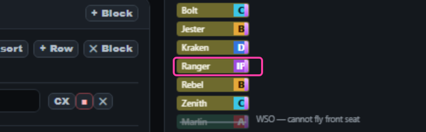
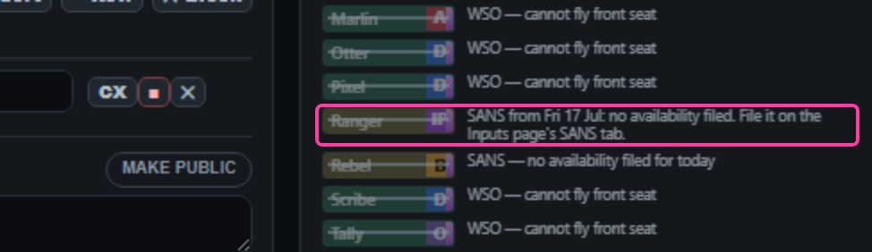
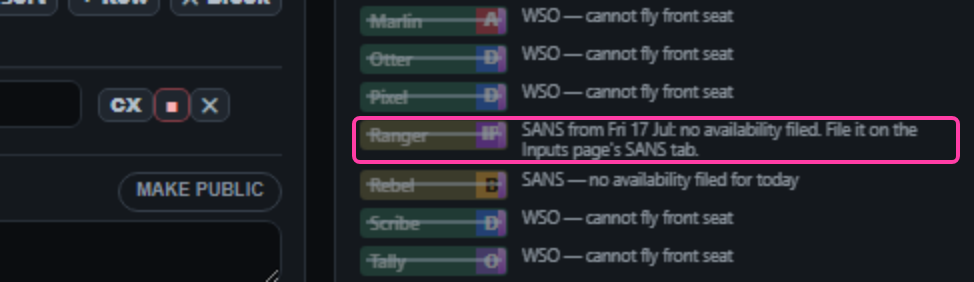
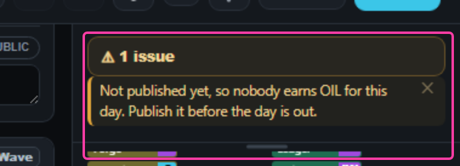
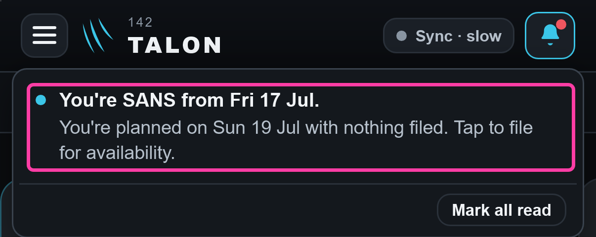
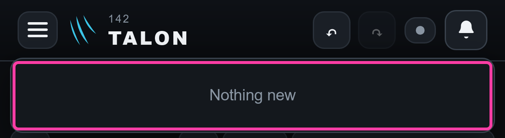
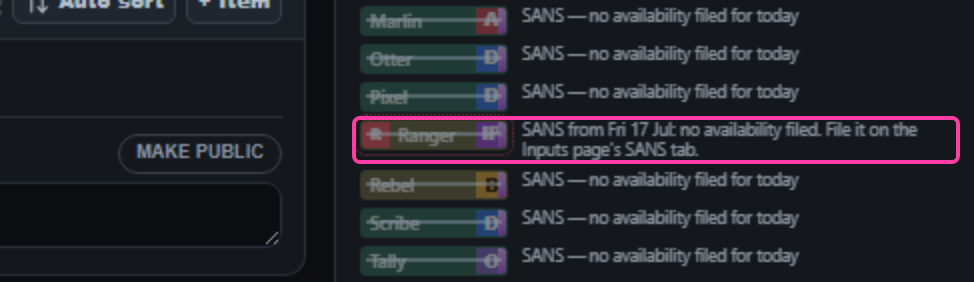
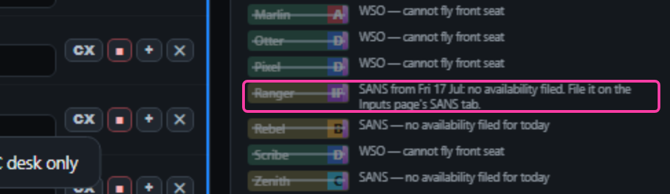
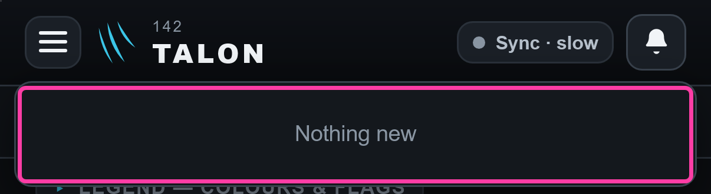
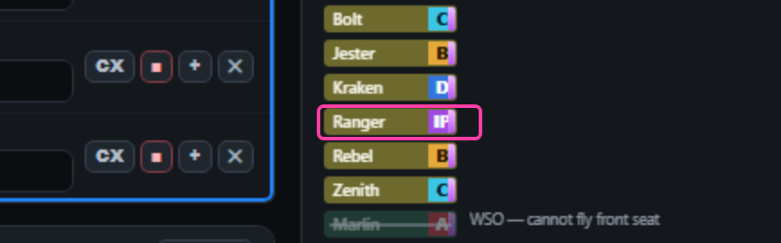

Four SANS cases your rulings don't settle
Last night's checks of the new SANS words found nothing broken. These four cases are ones your rulings don't settle. Each shows what the app does today.
1A seat on a flight with no times typed yet
The case
Ranger is SANS from Fri 17 Jul and has filed no SANS availability. Saber puts him in a seat on a Sat 18 flight that has no take-off or landing time typed yet.
What the app does today
- Ranger's bell reminder names Sat 18 — you ruled that a seat with no times yet counts.
- On Saber's crew list, with that seat armed, Ranger's name is not struck through.
- Once Saber types the times, the same armed seat strikes him through, with the reason beside his name.





Recommended — strike him there too
When Ranger has filed nothing, strike him on the crew list for a seat with no times as well. With nothing filed there are no times to compare, so there is no reason to wait for them. The reminder and the crew list then say the same thing.
What changes: Saber arms a seat on a flight with no times and sees Ranger struck, with the same reason as the timed seat. If Ranger has filed something, nothing changes.
Or
Leave the crew list as it is. Ranger stays plain on a seat with no times until Saber types them; his own reminder still names the day.
Your answer: strike him too (recommended)/leave as is
2The warning list when a SANS man has filed nothing
The case
The same Ranger, still with nothing filed, is in a seat on a Sat 18 flight that has its times typed.
What the app does today
- His reminder names Sat 18, and the crew list strikes him.
- The day's warning list shows no SANS warning. It warns only once he has filed and the seat falls outside what he offered — for example “SANS: not offering Fly today” or “SANS: available 08:00–12:00 only”.
- It has worked this way since August.




Recommended — keep it
The crew list and his own reminder already say it. A warning on every SANS flyer until he files would crowd the warning list on most days.
What changes: nothing.
Or
Add a warning on the day, “SANS: nothing filed for Sat 18”, for each SANS man planned with nothing filed.
Your answer: keep as is (recommended)/add the warning
3He offered one thing and is planned on another
When this happens
A SANS man files his own SANS availability on his phone, ticking what he offers that day: Fly, OFT or AMT. Saber plans him separately, often later. Sometimes the two don't match: he offered to fly and is planned on a sim, or he offered a sim and is planned to fly.
Example 1 — offered to fly, planned on a sim
- Saber has Ranger in the OFT sim on Sun 19.
- Ranger files SANS availability for Sun 19 and ticks Fly only, not OFT.
- Ranger's bell: the reminder for Sun 19 goes, because he has filed something for that day. Nothing tells him he is planned on a sim he didn't offer.
- Saber's screen: the crew list strikes Ranger for the OFT seat with “SANS — not offering OFT”, and the day's warning list says “SANS: not offering OFT today”.
Example 2 — offered a sim, planned to fly
- Saber has Ranger in a seat on a Sat 18 flight.
- Ranger files SANS availability for Sat 18 and ticks OFT only, not Fly.
- Ranger's bell: the same. The reminder for Sat 18 goes, and nothing tells him he is planned to fly.
- Saber's screen: the crew list strikes Ranger for the flying seat with “SANS — not offering Fly”, and the day's warning list says “SANS: not offering Fly today”.
What the app does today
Both ways round it is the same. His reminder only asks whether he has filed anything for the day. Whether what he filed matches what he is planned on is shown to Saber only.






No picture was taken of Saber's screen after the filing, or of example 2. The words quoted above are the app's own.
Recommended — keep it
The reminder has one job: get him to file. When what he filed doesn't match the plan, Saber sees it on the crew list and the warning list, and either changes the plan or asks him. Often the plan is what needs changing, not his availability.
What changes: nothing.
Or — tell him too
His bell also tells him when what he filed doesn't match what he is planned on. The line stays until he changes his availability or Saber changes the plan. Saber's screen stays as it is.
Example 1 would read: “You're planned on the OFT sim on Sun 19 Jul, but you offered Fly only. Tap to change your availability.”
Example 2 would read: “You're planned to fly on Sat 18 Jul, but you offered OFT only. Tap to change your availability.”
What changes: a new line on his bell, built after you approve its drawing. If you pick this, one more question follows: whether he is also told when he offered the right thing but the wrong hours.
Your answer: keep as is (recommended)/tell him too
4Standby seats
The case
Ranger, with nothing filed, is planned on standby on Sat 18.
What the app does today
- An SC MAIN seat counts as planned: his reminder names the day, the crew list strikes him, and the warning list treats it as a planned seat.
- An SC SPARE seat does not count: no reminder, no strike.
- An AVALON line counts only once it is ticked FLIES.
- The reminder, the crew list and the warning list agree each time.







Recommended — keep it
A SPARE, or an AVALON line that isn't flying, may never fly, so asking him to file for it would be asking too early. Once the line flies, it counts.
What changes: nothing.
Or
Count every standby seat — SC SPARE and an AVALON line not yet ticked FLIES too — in his reminder and on the crew list.
Your answer: keep as is (recommended)/count every standby seat